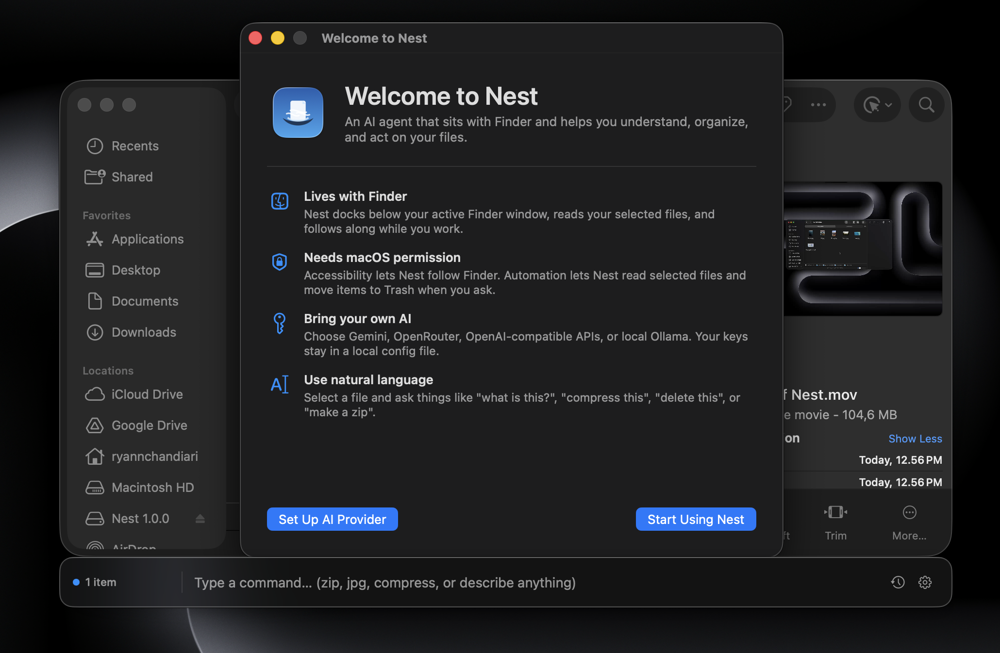

SHIPPED · 2026
Nest
A Finder-native AI companion for macOS that turns selected files and folders into safe, natural-language actions. Built with native Swift, AppKit, and local LLM pipelines.
SwiftUI
AppKit
macOS Automation
LLM API Integration
Ollama
